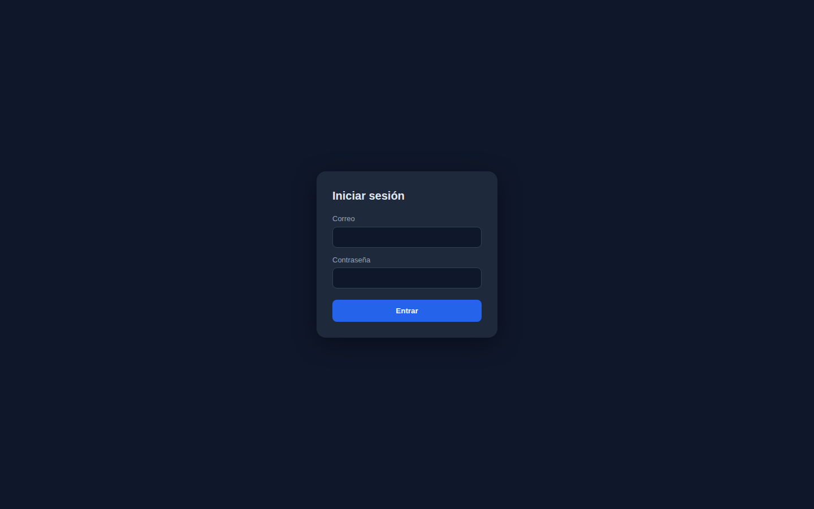
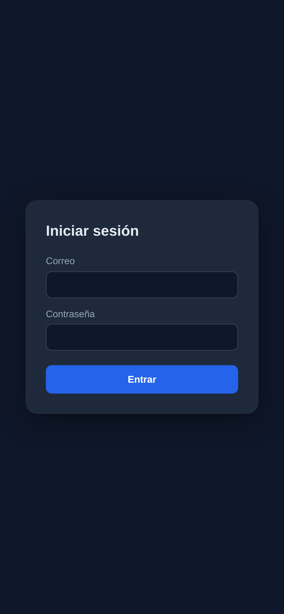

0
Blocker
0
High
0
Medium
0
Low
Hallazgos priorizados (0)
Sin hallazgos. 🎉
Corridas — el ojo grabado
Smoke post-deploy

#0 ✅ Abrir (baseUrl) — Abrir la URL de producción

#1 ✅ Verificar texto "Iniciar sesión" — Contenido esperado visible

#2 ✅ Captura prod — Estado en producción
Smoke post-deploy

#0 ✅ Abrir (baseUrl) — Abrir la URL de producción

#1 ✅ Verificar texto "Iniciar sesión" — Contenido esperado visible

#2 ✅ Captura prod — Estado en producción